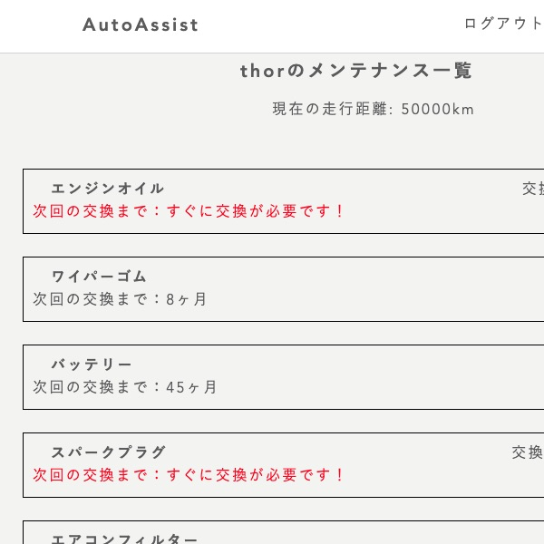
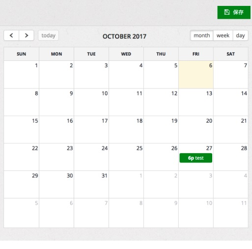

Auto Assist（自動車の管理アプリ）

-
概要
制作時間 70時間 URL https://auto-assist-1.onrender.com ID admin PASS 2222
OUTLINEアプリケーションの概要
オリジナルアプリケーションとして、車のユーザーが自分の車のメンテナンス管理をできるようにするためのアプリを作りました。主な機能は、車の登録機能、メンテナンスの記録機能、および交換時期の表示機能です。
トップページにアクセスすると、車両情報を登録できます。車両情報は何台でも登録できるため、複数の車を所有している人や法人でも、問題なく使うことができます。登録した車両の情報は、編集画面で書き換えることができます。車を手放したり、入れ替えたりした場合は、車の情報を削除することも可能です。
登録した車両は、メンテナンス画面で消耗品の交換サイクルと、次回までの走行距離（もしくは期間）を確認できます。現在の走行距離（もしくは期間）から、それぞれの消耗品の次回の交換時期を算出するため、ユーザーは交換サイクルを覚えたり、面倒な計算したりする必要はありません。
実際に車のメンテナンスをしたときは、メンテナンスの記録画面で整備した項目を登録することで、整備記録が残すことができます。同時に次回までの交換時期を計算して更新し、新しい交換時期を表示できるようにしています。
-
開発に至った経緯
自動車整備士としてお客様の車のメンテナンスを行う中で、度々「自動で消耗品の交換時期が算出できたらいいのに」と思っていました。
なぜなら、車の消耗品の交換時期（今どの部品の交換が必要か）は、プロの整備士が確認しなくても、消耗品の交換サイクルと使用パターンから簡単に計算して予測ができるからです。その予測はほとんど外れないため、交換時期を自動で計算してくれる仕組みがあれば、自動車ユーザーは車の知識がなくても自分で管理を行えるようになります。
現在、車のユーザーは、車のことはよく分からない、メンテナンスは全て整備工場に任せている、という人がほとんどです。しかし、この状況にはいくつかの問題があります。具体例をいくつか挙げると、自動車整備士の不足による整備工場の受け入れ台数の減少、メンテナンス状況が不透明なため（正確な記録が残っていない）メンテナンスに過不足が出てしまう、全くメンテナンスをしていないユーザーの車両の早期故障、といった問題です。
これらの問題の解決策のひとつとなるようなシステムを作ってみたいという思いから、Auto Assistの開発に至りました。
-
開発で工夫したこと
工夫したことは、車に詳しくない人でも、このアプリを抵抗なく使えるようにした点です。家族や友人に、車のメンテナンスについてヒアリングをしたところ「そもそも車についてよく分からないから、自分で管理をする気にならない」という意見がありました。そこで、トップページに「なぜメンテナンスが必要なのか」に対する説明を、誰でも分かるように記載しました。
また、メンテナンス管理画面の見た目や、メンテナンス履歴の入力がシンプルになるように工夫しました。メンテナンス項目の数が多くなりすぎないように重要な消耗品に絞り、入力画面をシンプルにすることで誰でも直感的に操作できるようにしました。
-
今後実装したいと思っていること
さらにメンテナンスの管理をしやすくするために、今後実装したいことが2点あります。
1つ目は、fullcalendar-railsを使って、カレンダー機能を追加することです。メンテナンス管理画面に年月カレンダーを入れることで、今後、なんの消耗品がいつ交換時期を迎えるのか一目で分かるようにしたいです。
2つ目が、EVやハイブリッド車にも対応させることです。現在は、管理する車両がガソリン自動車であることを前提にしており、EVやハイブリッド車には対応していません。車両の登録（編集）画面から車両の種類を選択できるようにし、それぞれに適した消耗品や交換サイクルを表示できるようにしたいと考えています。